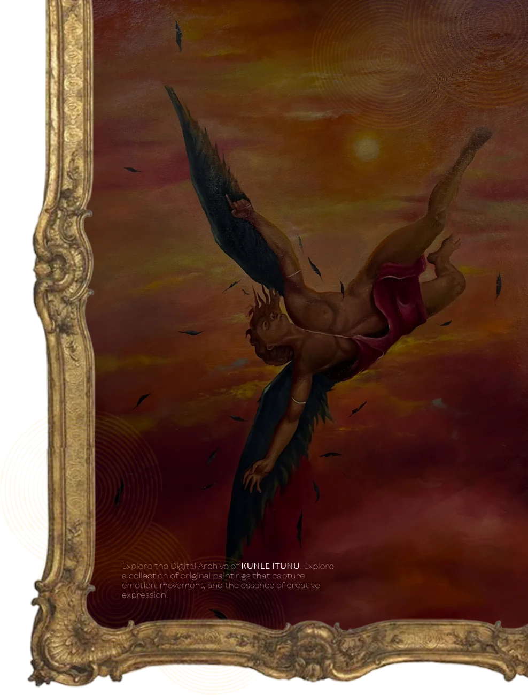
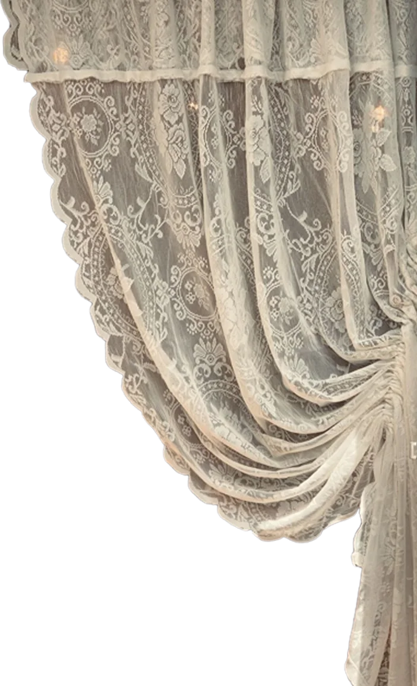

Welcome to
THE ARCHIVE
Explore the Digital Archive of KUNLE ITUNU. Explore a collection of original paintings that capture emotion, movement, and the essence of creative expression.


Explore the Digital Archive of KUNLE ITUNU. Explore a collection of original paintings that capture emotion, movement, and the essence of creative expression.

